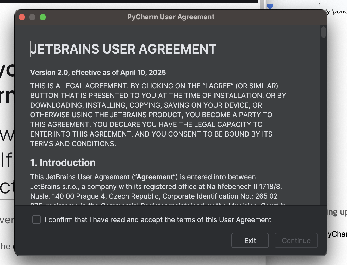
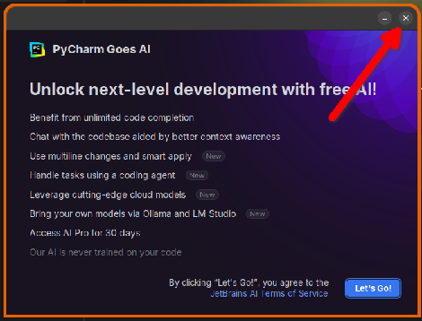

Go to the PyCharm website, select Download. Download the installer program and run it. Follow the installation instructions to install PyCharm.
Find the PyCharm application on your computer, and run it. The first time you run it, you may need to answer some questions to configure PyCharm. The screenshots below are for a Mac, your screens may look different on a Windows machine, but the questions should be essentially the same.
If you are installing the PyCharm on your own computer, then you will see a page with JetBrains’ user agreement. Select the check box and then the Continue button.

If all goes well, PyCharm should then begin its startup process. You should see a screen like the following:
You may also see the “PyCharm Goes AI” popup. Just close the popup; don’t click “Let’s Go”.
